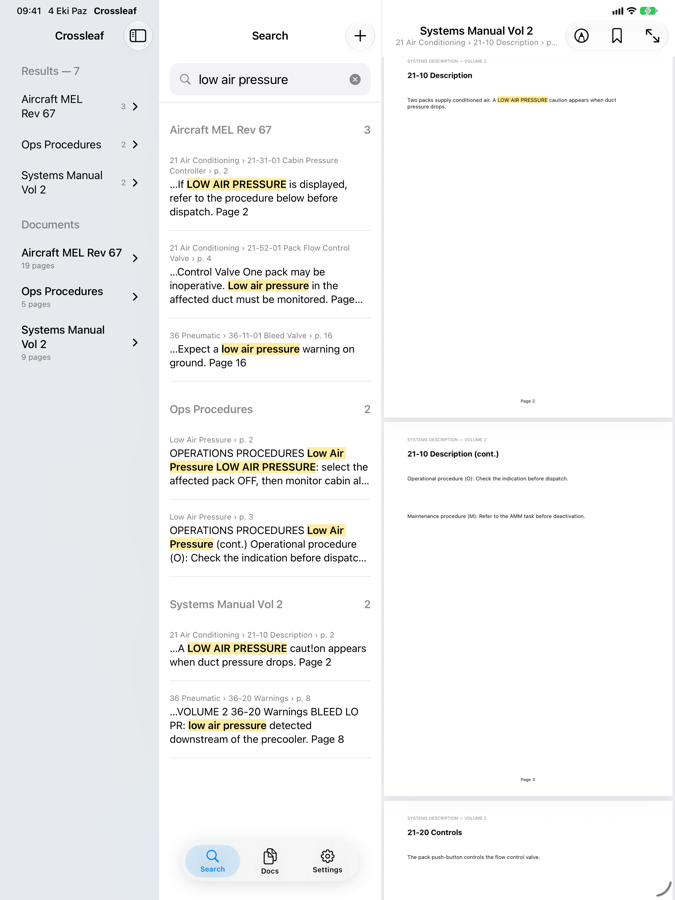
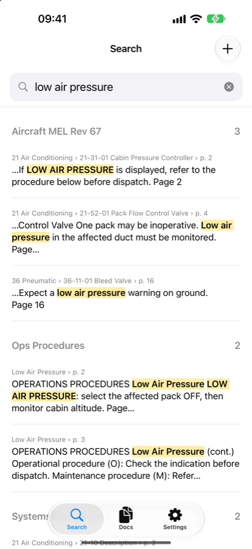

Crossleaf is a workspace for the big PDF manuals you work with every day. Add them once, type a phrase, and see every place it appears — in every document, by document, section and page.
iPad and iPhone · one purchase, no subscription · works fully offline


How it works
Private by design
Crossleaf never connects to the internet and collects no data. No account, no analytics, no ads, no tracking. Read the privacy policy.
 Crossleaf
Crossleaf